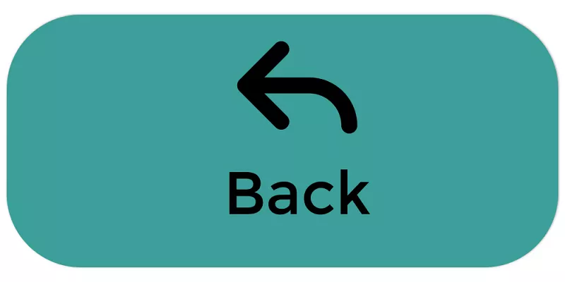

My Thoughts on Sports
Sports requires physical exercise. It opens up one's lungs and enhances the body to become more flexible, agile and reactive. Despite all the physical advantages, being involved in a sport is also so great for your brain and personality.
Sport is a competition where you contend with the opposition. You need to assess their moves and make quick decisions, improving your mental ability. Thinking quickly and responding in the correct manner has conclusive impact on a sportsperson's brain.
My Gaelic Football Background
- I can still remember the first day I set foot on my local football pitch in Kilmurry at the age of eight years old.
- I instantly fell in love with the sport and have been playing it ever since.
- My passion for Gaelic football has lead me to create many meaningful friendships.
- I believe I have grown and matured in many ways due to my dedication to football.
- My favourite football player is Daniel Goulding. He was a big influence on me as a young footballer and is a great idol for future aspiring county players.
Daniel Goulding
Soccer
It took a couple of years into my sporting career to finally begin playing soccer and I think it is safe to say that I haven't looked back since. It is a sport that I grew in to as I began to become more and more intersted in the Premier League. At the age of nineteen years old, I am a fully fledged Chelsea supporter and haven't missed watching one of their matches for the past two consecutive seasons.
My favourite soccer players
- Eden Hazard
- Michy Batshuayi
- Cristiano Ronaldo
- Lionel Messi
- Callum Hudson-Odoi
Eden Hazard
Click here to read an article on the mental benefits of sports!
